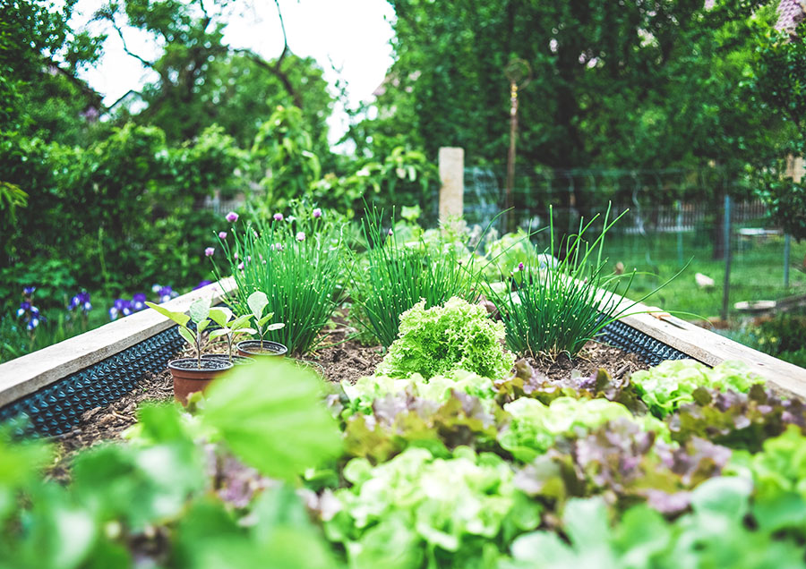

Grønne Drømme
Velkommen til vores website for haveentusiaster.
Siden indeholder informationer om planter, der kan dyrkes i danske haver - både grøntsager, krydderurter,
blomster og træer. Det primære fokus ligger dog på spiselige planter.
Vi brænder for at være selvforsynende og håber, at vi kan inspirere andre til at gå i samme retning - det
påvirker både din families sundhed og vores alles klima i en positiv retning.